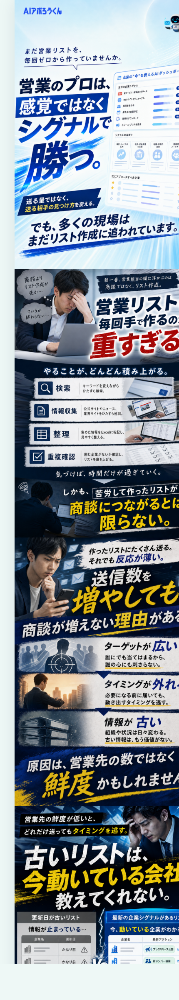
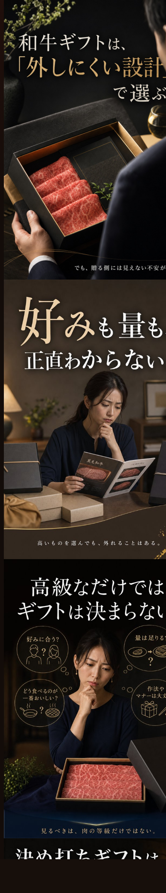
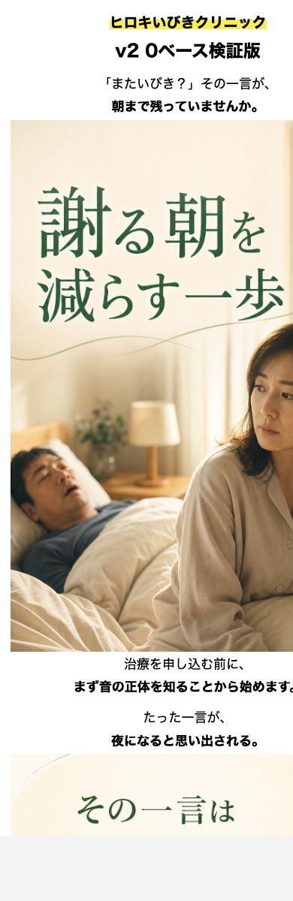

Controlled C LP
AIアポろうくん C LP
「営業先はリストとして買う/作るものではなく、企業の動きから見つけ続けるもの」へ認知を転換する20枚構成のImage2 LP。
- Status
- CMO approval PASS
- QA
- OCR 20/20、continuity 100、blocking issues 0
- Method
- DPro参考LP RAG、Owned asset RAG、brand governance regression
Agentic RAG / DPro / Image2 / QA Loop
広告データとRAGで勝ち筋を読み、N1仮説からLP・記事LP・バナーまで生成し、OCR/導線/薬機・ブランドリスクまで検証する制作OS。
2.3は、単発のデザイン生成ではなく、広告市場の観察、商品理解、N1コンセプト、画像内コピー、HTML実装、検証ログまでをひとつの反射ループとして残せます。
このページは、AIアポろうくん、和牛セレブ、ひろきいびきクリニック、広告バナーの代表作をまとめたローカルポートフォリオです。
Selected Work

Controlled C LP
「営業先はリストとして買う/作るものではなく、企業の動きから見つけ続けるもの」へ認知を転換する20枚構成のImage2 LP。

Latest LP
公式素材をそのまま貼らず、Image2 reference / RAG evidenceとして使い分け、贈答の「外したくない不安」をカタログ選択へ変換するLP。

Latest Complete Article LP
家族からの指摘を「責め」ではなく相談理由へ変え、医療広告リスクを避けながら、確認行動としての初診CTAへつなぐ記事LP。
2026-05-08 08:11のCouncil版は3/20画像のpartial prototypeだったため、展示は直前の完走版を採用。
展示版に収録済みProduction Loop
01
高消化・高反応の広告構造を拾い、需要セグメント、導線、フック、勝ちパターンへ変換。
02
誰に、どの違和感を、どの新認知で動かすかを仮説化し、LP/記事LPのsales atomへ分解。
03
HTMLの説明文ではなく、画像内コピーと視覚証明で読み進めるスマホ縦型LPを構築。
04
OCR、重複、連続性、ブランド衝突、薬機/医療広告リスク、表示QAを通して次の改善に戻す。